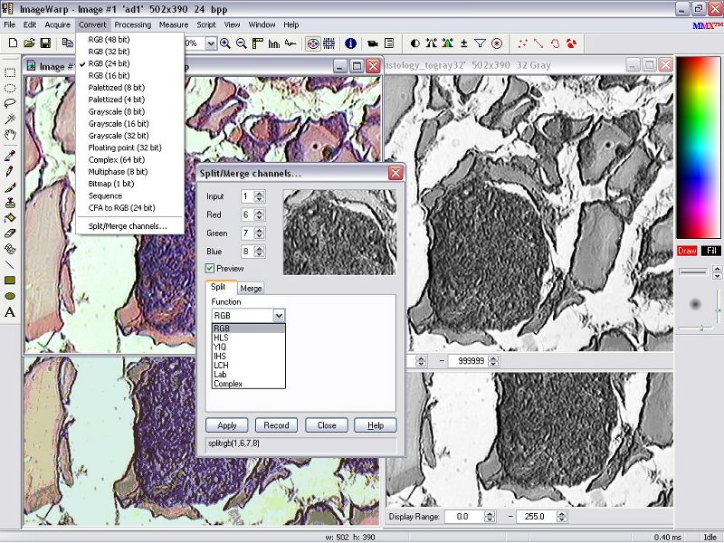
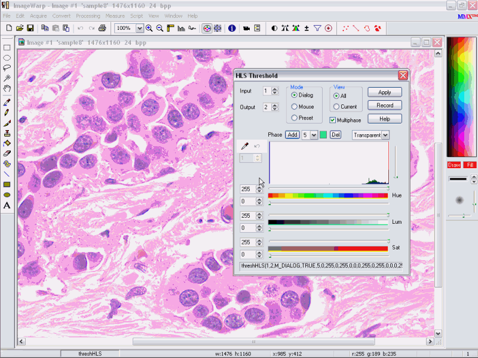
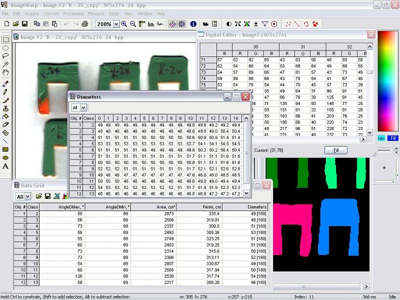

Features
- acquisition
- interface
- graphic editing
- processing
- conversion
- geometry, arithmetics and logic
- interactive adjustment and segmentation
- filters
- fourier transform
- morphology
- generating
- calibration
- measurement
- analysis
- visualization
- programming
- system requirements
- built-in video drivers
- customization
- acquisition
- interface
- graphic editing
- processing
- conversion
- geometry, arithmetics and logic
- interactive adjustment and segmentation
- filters
- fourier transform
- morphology
- generating
- calibration
- measurement
- analysis
- visualization
- programming
- system requirements
- built-in video drivers
- customization

- Capture images from USB, IEEE-1394, USB 3.0 and GigE digital cameras, framegrabbers, TWAIN, VFV and WDM devices.
- Perform frame averaging and integration while capturing.
- Real-time Bayer decoding for raw color devices.
- Acquire, create, and playback image sequences with user-specified time lapse.
- Capture video into AVI 2.0 files with selectable compression.
- Support for 10-, 12- and 16-bit input devices
- Video format and size selection.
- Hardware-controlled brightness, contrast, saturation and hue;
- Mapping of image memory to the DMA buffer for performance boost
- Simultaneous grabbing from multiple cameras.
- Trigger and encoder synchronization; exposition, clock and line rate adjustment for digital and line-scan cameras.
- Simulation video-driver for prototyping real-time algorithms prior to buying imaging hardware.
- Simulate video input from an AVI file, generate standard patterns, apply several types of noise to a static image, add non-uniform background.
- Read and store images in BMP, PCX, GIF, JPEG, TIFF, TGA, FITS, STK and user-defined formats.
- Handle a wide variety of images types, including the high-bit depth ones:
- 1-bit binary
- 8-bit gray
- 16-bit gray
- 32-bit gray
- 32-bit floating point
- 64-bit complex
- 4-bit palletized
- 8-bit palletized
- 8-bit multiphase
- 24-bit color
- 48-bit color
- Support extended TIFF format for storing high-depth images and look-up tables
- Use a proprietary IWD format with lossless compression
- Preserve geometrical and optical scales in IWD, TIFF and JPEG files
- Adjust compression settings for JPEG, TIFF and AVI files

- Multiple document environment for viewing and manipulating images, data tables, and charts.
- Open Image dialog with thumbnail preview and multiple image selections.
- Up to 100 image frames with superimposed self-adjustable rulers
- Display range selectors for high-depth images
- Correct rendering of images in 256-color display mode
- Real-time video window for live acquisition display
- Play/stop controls and frame counter for image sequences
- Intermittent and numerical zoom controls
- Context zoom that magnifies the area of interest pointed by the cursor
- Comprehensive functional dialogs with sliding previews
- Palette bar with foreground and background color selection
- Undo/redo stack of user-selected size
- Interactive multi-channel histogram associated with an active image
- Interactive multi-channel line profile with an extensive selection of shapes (vertical, horizontal, line, rectangle, ellipse, freehand)
- Digital Editor for viewing and editing the numeric content of an active image
- Script Editor for automatic and manual scripting, debugging, storing, and executing imaging algorithms
- Live update of interface elements (images, tables, charts and previews) while running real-time scripts
- Information box for viewing and changing general image parameters
- Print dialog with image position and size adjustment and integrated preview
- Context-sensitive help: position the cursor over any interface element and press F1

- Rectangular, elliptical and freehand selections (ROI)
- Running marquee for outlining current selection
- Multiple selections automatically combined into one irregular ROI
- Add negative selections to set up a ROI with holes
- Use Magic Wand to select a connected area of similar pixels
- Copy image or selection into Windows clipboard
- Paste image from clipboard as a new image or as a selection into an existing image (supports all image formats including the high-depth ones)
- Move selection over a current image or from one image onto another
- Move images from or into another program by using a drag-and-drop operation
- Extensive set of drawing tools for direct application to all supported types of images:
- Color picker
- Pencil
- Brush
- Flood
- Clone
- Eraser
- Stamp
- Line
- Rectangle
- Ellipse
- Text
- Warp
- Adjustable width of pen
- Adjustable size, transparency, hardness, and spacing for brush family tools
- Constrain and straight line options for drawing tools
- Automatic image scrolling when a drawing tool touches the edge of the frame
- RGB/HLS interactive color editor for foreground and background color selection
- Comprehensive palette editor which allows to modify palettes of indexed color images and to change the appearance of 8-bit and 16-bit monochrome images by assigning colors to luminance values
- Automatic and interactive palette rotation
- Gray scale maps (look-up tables) for 8-bit and 16-bit monochrome images
- Edit image sequences by cutting off or inserting series of frames.

- Intel SSE2/SIMD technology utilized for performance boost
- Multithreading engine allows for performing up to 16 parallel operations simultaneously
- Automatic parallelization distributes imaging functions among several CPUs on multiprocessor and multicore systems
- Distributed image processing on several computers using Gigabit Eithernet
- Execution time of the last called function displayed for benchmarking and prototyping purposes
- Progress meters on the status bar (up to four in multiprocessing mode*) for following the execution progress of each function
- Hidden images for buffering intermediate results in scripts
- All operations performed on the current image selection
- Selectable coordinate system for processing color images (RGB, HLS, HSV, L-vector)
- Selectable overscan (invisible borders around the images) for speed-boost
- High-depth image support in all processing functions

- Conversions between all types of supported image formats
- Select the output luminance range when converting into high-depth types
- Three modes of color reduction when converting into palletized types
- Extract or merge color channels (RGB, HLS, HIS, RCH, YIQ, Lab)
- Convert a color filter array image into RGB image (Bayer filter)
- Extract or merge component images from or to a complex image (Re, Im, Amp, Phase)

- Interactive or automatic resizing with selectable bilinear smoothing
- Translate, Rotate, Flip, Reflect and Warp spatial operations
- Affine and projective image transformation
- Image alignment and stitching
- Conversion between Cartesian and Polar coordinate planes
- Arithmetic operations: Invert, Offset, Factor, Average, Add, Subtract, Multiply, Divide
- Automatic application of component operations to complex images
- Logical operations: Not, And, Or, Xor, Nor, Nand, Xnor, LShift, RShift, Mask
- Feature-And function which identifies overlapping features on two images

- Real-time full screen preview during the adjustments
- Brightness/Contrast/Gamma adjustment in RGB and HLS space
- Hue/Saturation, Levels, Color balance correction
- Interactive binary and multiphase thresholding with sampling feature
- Color multiphase thresholding in RGB and HLS space.
- Several methods of automatic thresholding based on histogram analysis.
- Adaptive segmentation based on local distribution analysis

- Emphasize contours with adjustable boost
- Sharpen and unsharpen masks
- Uniform, logarithmic, exponent, and bell equalization
- Brightness normalization with selectable strength
- Dark and white field background correction
- Several methods of background elimination
- Suppress noise using Lowpass, Median, Gauss, Sigma, Salt&Pepper operations with the adjustable window and strength.
- Remove motion artifacts with Deinterlace function.
- Detect edges using Sobel, Prewitt, Laplace, Roberts, Range, Variance, HighPass, and Gradient operators.
- Find direction of edges using the Phase mode.
- Create graphic effects using Emboss, Pixelate, Floyd, and other miscellaneous filters.
- Customized convolution with user-defined kernel images

- Perform discrete and fast transform in both directions
- Create a complex image as a spectral result of direct transform
- Switch between real, imaginary, amplitude, and phase components of the spectrum
- Use graphic editing to modify the spectrum in a complex image
- Perform Fourier-based convolution and de-convolution with a user-defined kernel image

- Basic set of operators: erosion, dilation, opening, closing, tophat, contours, majority.
- Iteration-independent high-speed algorithms for binary morphology
- Multiphase-aware algorithms keep objects of different class from merging
- Proprietary high-speed thinning, thickening and pruning
- Fast convex hall in the multiphase space
- Grayscale morphology with full support of 16-bit, 32-bit, and floating point images
- Proprietary color morphology in the selectable color space
- Binary, gray and color operations with user-defined kernels
- Extensive set of geodesy functions: distance map, direction map, local min, local max, ultimate erosion, medial axis transform, end, node and saddle points
- Several metrics for distance transform including Euclidian one.
- Accurate separation of touching convex objects.
- Multiphase connectivity algorithms: labeling, filling holes, border kill, scrap cleaning
- Watershed operator extracts ridges and basins in the intensity relief.
- Link operator for connecting broken lines
- Hit-and-miss transform for binary template search.

- Built-in set of standard signal and pattern generators for prototyping and testing:
- Random noise with user-defined amplitude, density and distribution (Uniform, Gauss, Poisson, Impulse)
- Non-uniform light from point and line sources.
- Gray and color wedges.
- Gray and color grids
- Sine wave of arbitrary amplitude, frequency, phase, and orientation

- Interactive and automatic spatial calibration
- Interactive choice of the coordinate system origin and Y-axis direction
- Watch image dimensions in calibrated units on superimposed rulers
- Set up the default spatial scale for video capture device
- Optical calibration with Lagrange and polynomial approximation.
- Name, store and load calibration scales.
- Store calibration data along with images in IWD, TIFF, and JPEG formats

- Select from more than 100 parameters using comprehensible graphic representation:
- Object count, class, pixel count, equivalent diameter
- Area, outline area, reference area, phase area, box area, convex area
- Perimeter, circular perimeter, elliptical perimeter, convex perimeter
- Circularity, ellipticity, rectangularity, convexity, roughness, aspect ratio
- Starting and ending position, bounding box, box ratio, angle
- Feret diameters (maximum, minimum, average), Feret angles, Feret ratio
- Radii (maximum, minimum, average), radial angles, radial ratio
- Diameters (maximum, minimum, average), diametric angles, elongation
- Centroid, center of gray, major and minor axes and angles
- Raw and normalized binary moments, skewness, assymetry
- Chord length, vertical and horizontal intercept, anisotropy
- Gray level, standard deviation, transmission, optical density, roughness
- Red, green and blue average levels and standard deviations
- Number of holes, area of holes, perforation
- Parameters-arrays of variable size: Histogram, Contour, Convex hull, Curvature, Radii, Diameters
- User-defined parameters programmed in the scripting language syntax
- Manual count and classification
- Point, line, angle, and area morphometry
- Multiphase field stereology
- Densitometry and position analysis
- Interactive object tracking by mouse or digitizer
- Automatic and interactive blob measurements
- Accumulation of results in interactive grids; clicking a line causes a correspondent object on the image to blink
- Selection or removal of objects by using a specified parameter limits
- Classification of objects by a specified parameter
- Interactive line profile

Load, view, and edit measurement data in multilevel tables-spreadsheets
- Select among three data formats: fixed, scientific, and general
- Chose between full list and selected class of objects
- Calculate additional parameters using built-in set of more than 200 spreadsheet functions including:
- Mathematical
- Statistical
- String
- Logic
- Date and time
- Miscellaneous
- Switch to Statistics mode to view full statistic report for each parameter
- Export data into text, HTML, dBase and Microsoft Access format
- Run-time DDE export to Microsoft Excel
- Switch to Graph mode to visualize the data in a form of multi-channel histogram, scattergram, line profile, pie, and 3D-plot
High-performance global data grids
- Display instantaneous measurement results in real time
- Double click a cell with a parameter-array and watch its elements reported in a popup grid
- Interactively connect grid cells to script variable
- Open data charts linked to desired measurement parameters
Analyze and edit the pixel values of an active image in an interactive Digital Editor:
- Observe and edit* pixel values separated into channels and formatted with regard to the type of an active image
- Scroll the pixel table to a new location and watch the marker on the image move accordingly
- Drag the marker on the image to a new location and watch the table scroll accordingly (in development)
- Change the active image selection using the Selection Tool and watch an instant change of values in the Digital Editor
- Apply any image processing function and watch an instant digital result
- Click a table cell and use an emerged spin control to gradually change pixel values
- Select a group of pixels on a table and fill it with a background color
- Watch pixel values changing in real-time for live images and sequences
Decode 1D and 2D barcodes from an image:
- Locate and decode 1D barcodes: UPC-A, UPC-E, EAN-8, Code 128, Code 39, Interleaved 2/5
- Locate and decode 2D barcodes: QR Code, DataMatrix, PDF417

Analyze the active image histogram in an interactive Histogram box:
- Choose among several profile shapes: vertical, horizontal, line, rectangle, ellipse, freehand
- Switch between different channels of color images (R, G, B, H, L, S, Y, I, Q)
- Select a desired intensity range for profile analysis
- Switch between Table and Graph modes
- View statistics collected along the profile line
- Drag a profile line over the image and watch a synchronous update of the graph
- Watch profile animation for live images and sequences
Display comprehensive Excel-style data charts
- Link a chart to a desired data table or global grid
- Choose a measurement parameters and channels for data series
- Display a distribution of objects' population in form of bar or line histograms
- Display a distribution of a parameter on a pie diagram
- Analyze a correlation between two measurements using a scattergram with a polynomial fit.
- Plot several measurements against each other on a 3D multi-histogram
- Adjust an appearance of titles, axes, tick marks, and background
- Watch live update of charts linked to real-time data

- Built-in high-level scripting language with parallel processing engine:
- Visual Basic subset syntax
- Automatic compilation for higher performance
- Integer, floating point and string variables
- Support of objects with dynamic memory allocation
- Predefined frequently used constants
- Nested arithmetic and logical expressions
- IF/THEN/ELSE/END IF and GOTO branch operators
- Cycle operators (FOR/TO/STEP/NEXT, WHILE/WEND, DO/LOOP)
- Nested subroutines and functions (SUB/END SUB, FUNCTION/END FUNCTION)
- THREAD operator for parallel processing
- Terminal window for rapid data input/output (INPUT, PRINT)
- Dialog window for interactive input/output (DIALOG)
- Direct access to imageWarp's global data tables for real-time data management
- Set of serial communication commands (COM and Camera Link ports)
- More than 200 built-in image processing, data manipulaton, graphic editing, and screen management functions
- Comprehensive Script Editor with command line support:
- Use Record button to log all the interface commands into the script
- Use Play button to playback the recorded session
- Use Step, Step Into and Step Over buttons to perform step-by-step execution
- Insert breakpoints for halting the execution of the script at desired lines.
- Debug your script using variable watch and error window.
- Change the execution point by double-clicking on a desired line
- Insert new operators and functions into the script by manual editing
- Use keyword highlighting and popup tips for help on syntax
- Enter a single command in the command line box and execute it outside the script
- Save the current script and reload it later
- Dynamic Data Exchange (DDE)
- Harness imageWarp's functionality from within your own application
- Have a full control of imageWarp by executing prerecorded scripts or issuing run-time script commands
- Establish a hot-link to imageWarp and make it notify your application when important event occur
- Retrieve the results of image analysis and process them further with your own algorithms
- Automation (COM)
- Integrate ImageWarp into your application by using it as a COM sever
- Access hundreds of ImageWarp functions using COM methods and properties
- Exchange images between your application and imageWarp
- Synchronize your application and ImageWarp with a set of COM events
- Run ImageWarp in invisible mode and provide end-users with your own GUI
- Proof of concept
- Use our expertise in image analysis to get a free support with building your application
- Send us your images and receive a working script which you can utilize as a programming template

- Intel Pentium 4 or higher class CPU (Quad-core CPU recommended)
- Microsoft Windows Windows XP/Vista/7/8/10, 32- or 64-bit platform
- A minimum of 512 Mbytes of RAM (2 Gbytes recommended)
- FireWire(IEEE-1394), USB 3.0 or/and GigE adapter
- Supported frame grabber or video capture card

- WDM (DirectShow)and VFW (Video for Windows) devices
- TWAIN-supported devices
- FireWire (IEEE-1394) digital cameras, IIDC 1.32 compliant
- Gigabit Ethernet cameras, GigE Vision 1.x and 2.x compliant
- USB 3.0 cameras, USB3 Vision 1.x compliant
- GenTL-supported devices, GenICam compliant
- Bitflow CameraLink, CoaXPress, LVDS and analog boards: RoadRunner, R3, R64, Neon, Karbon, Alta
- Video simulation

OEM development, special modules and custom functions are available on demand